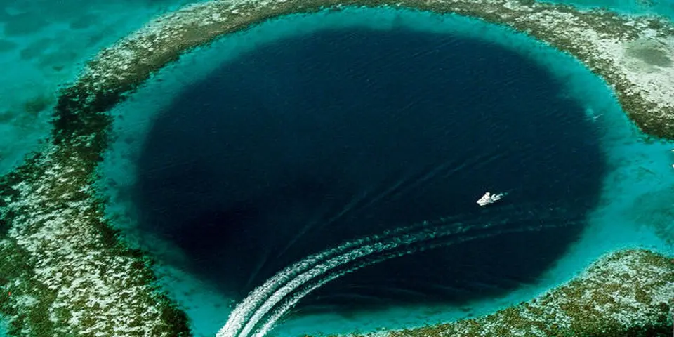

Central America & Caribbean
Belize on a budget
Snorkel the reef off Caribbean cayes, see the Great Blue Hole and wade into Mayan caves. Pricier than its neighbors, but guesthouses help.
Photo: U.S. Geological Survey (USGS), Public domain, via Wikimedia Commons

Classic route
Caye Caulker, then San Ignacio for caves and ruins. 1 week.
Before you go
Flights to Caye Caulker: Skyscanner · Kiwi.com · Google Flights
Hostels and guesthouses in Caye Caulker · San Ignacio · Placencia · Hopkins
Tours and tickets: Caye Caulker · San Ignacio
Mobile data: Belize eSIM
Travel insurance: SafetyWing
How much 9 places in Belize cost
Daily budgets per person in US dollars: a hostel dorm or simple guesthouse, local food, local transport and the usual entry fees.
-
Caye Caulker
No cars, sandy streets and a 'go slow' motto, with reef snorkelling, nurse sharks and sunset swims at the Split.
Bed $25 · Food $15 · Getting around $4 · Extras $20
Budget tip: Snorkel trips to Hol Chan and Shark Ray Alley are the best value activity. Street barbecue stands serve cheap grilled fish and chicken.
$64per day -
San Ignacio
Swim and scramble into the ATM cave to see Mayan skeletons, then climb El Castillo at the Xunantunich ruins near town.
Bed $20 · Food $12 · Getting around $4 · Extras $25
Budget tip: ATM cave tours must go with a licensed guide. Reach Xunantunich cheaply by local bus and the free hand-cranked river ferry.
$61per day -
Placencia
A sandy peninsula with a long pedestrian sidewalk, beach bars and snorkel trips to the reef-ringed Silk Cayes.
Bed $28 · Food $15 · Getting around $4 · Extras $20
Budget tip: Take the Hokey Pokey water taxi to Mango Creek to connect with buses instead of paying for a private shuttle.
$67per day -
Hopkins
Learn Garifuna drumming, eat hudut fish stew with mashed plantain and laze on a quiet Caribbean beach in this friendly fishing village.
Bed $22 · Food $13 · Getting around $3 · Extras $5
Budget tip: Rent a bicycle to get around town. Cheap buses stop on the highway, a short taxi ride from the village.
$43per day -
Cockscomb Basin
The world's first jaguar reserve, with jungle trails, swimmable waterfalls and a steep climb to the Ben's Bluff lookout.
Bed $15 · Food $10 · Getting around $5 · Extras $10
Budget tip: Sleep in the reserve's dorm or campground and bring groceries from Maya Centre, as there are no shops inside.
$40per day -
Punta Gorda
Southern Toledo district town near Maya villages, cacao farms, cave swimming at Blue Creek and the ruins of Lubaantun and Nim Li Punit.
Bed $18 · Food $11 · Getting around $5 · Extras $8
Budget tip: Stay in Maya village guesthouses through local programs; chocolate tours on cacao farms are cheaper booked directly.
$42per day -
Mountain Pine Ridge
Pine forest reserve with Big Rock Falls, Rio On Pools, the Rio Frio Cave and access to the Caracol Maya ruins.
Bed $20 · Food $12 · Getting around $10 · Extras $15
Budget tip: Share a tour or rented car from San Ignacio with other travellers; the Rio On Pools are free and good for picnics.
$57per day -
Lamanai
Reach these Maya temples by boat up the New River, spotting crocodiles on the way, then climb to the carved faces of the Mask Temple.
Bed $22 · Food $12 · Getting around $5 · Extras $30
Budget tip: Day tours from Orange Walk cost much less than those from the cayes, and they include the river trip.
$69per day -
Ambergris Caye
Largest Belizean island, with San Pedro's sandy streets, Hol Chan Marine Reserve snorkeling and Shark Ray Alley nurse sharks.
Bed $30 · Food $17 · Getting around $5 · Extras $25
Budget tip: Water taxis from Belize City or Caye Caulker are cheap compared with flights; eat at street stalls in San Pedro rather than resort restaurants.
$77per day
Know before you go
Belize on a budget: the basics
Currency
$1 = 2.00 BZD
Belize dollar
| Dollars to BZD | BZD to dollars | ||
|---|---|---|---|
| $1 | 2.00 BZD | 1 BZD | $0.5 |
| $5 | 10.00 BZD | 5 BZD | $2.50 |
| $10 | 20.00 BZD | 10 BZD | $5.00 |
| $20 | 40.00 BZD | 50 BZD | $25.00 |
| $50 | 100 BZD | 100 BZD | $50.00 |
| $100 | 200 BZD | 500 BZD | $250 |
A typical day here (about $64) is roughly 130 BZD.
Mid-market rate on 2026-10-05. Cash machines and exchange desks pay a little less.
Getting around
Cheap buses, often old school buses, run along the main highways from Belize City to San Ignacio. Water taxis connect Belize City with Caye Caulker several times a day, and on the island you walk, cycle or take a golf cart. Ride-hailing apps aren't really an option, so use licensed taxis with green plates.
Where to sleep
Caye Caulker and San Ignacio have hostels and simple guesthouses, and island beds fill up around holidays, so book ahead then.
What to eat
- Stew chicken with rice and beans: the national everyday plate
- Fry jacks: puffy fried dough eaten for breakfast with beans
- Garnaches: crisp tortillas topped with beans, cabbage and cheese
- Hudut: Garifuna fish in coconut broth with mashed plantain
Money
The Belize dollar is fixed at 2 to 1 with the US dollar, and US cash is accepted almost everywhere, though change often comes in Belize dollars. Tipping 10 to 15% is common in tourist areas.
Phone data
Digi and Smart SIMs are easy to buy in towns, and coverage is good on Caye Caulker and the main roads but patchy in the jungle around caves and ruins.
Heads up
Book cave tours like Actun Tunichil Muknal with licensed guides only, since independent visits aren't allowed.
Belize travel: quick answers
How much does a day in Belize cost on a budget?
About $64 a day for one person, from $40 in Cockscomb Basin to $77 in Ambergris Caye. That covers a hostel dorm or simple guesthouse, local food, local transport and the usual entry fees, so a week runs about $448 before flights.
When is the best time to visit Belize?
December to April is the best time, with the most reliable weather for getting around.
What is the cheapest place to visit in Belize?
Cockscomb Basin, at about $40 a day. The world's first jaguar reserve, with jungle trails, swimmable waterfalls and a steep climb to the Ben's Bluff lookout.
How long do you need in Belize?
Caye Caulker, then San Ignacio for caves and ruins. 1 week.
How much is $1 in Belize?
One US dollar is about 2.00 Belize dollar (BZD), going by the mid-market rate on 2026-10-05. So $20 is roughly 40.00 BZD, and a typical budget day of $64 comes to about 130 BZD.
How do you get around Belize cheaply?
Cheap buses, often old school buses, run along the main highways from Belize City to San Ignacio. Water taxis connect Belize City with Caye Caulker several times a day, and on the island you walk, cycle or take a golf cart. Ride-hailing apps aren't really an option, so use licensed taxis with green plates.
What food should you try in Belize?
Stew chicken with rice and beans, the national everyday plate. Fry jacks, puffy fried dough eaten for breakfast with beans. Garnaches, crisp tortillas topped with beans, cabbage and cheese. Hudut, Garifuna fish in coconut broth with mashed plantain.
Planning around the seasons? See where to go in December, or compare the cheapest countries nearby.
Similar budgets nearby
- Costa Rica $64/day
- Jamaica $59/day
- Trinidad and Tobago $55/day
- Honduras $49/day